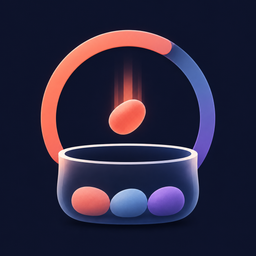
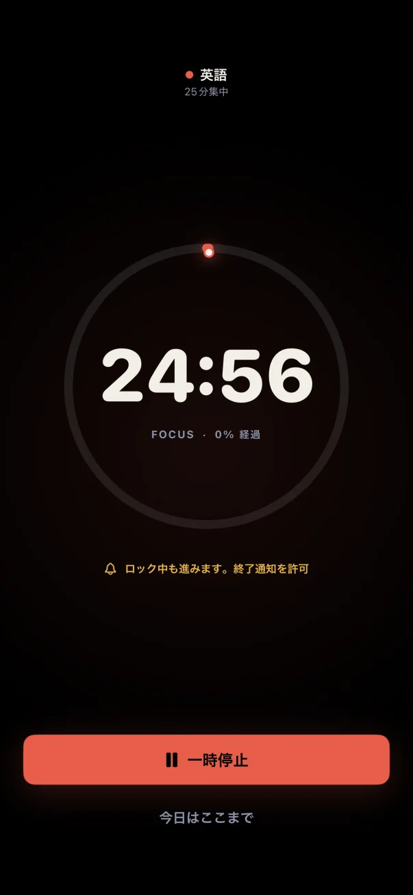
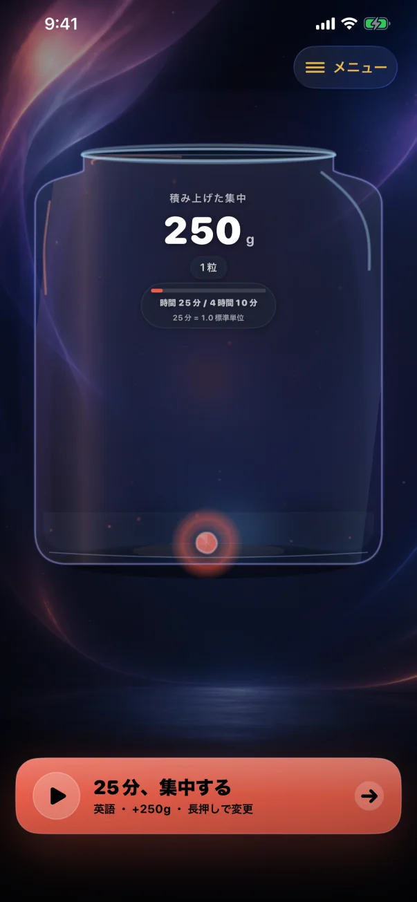

減らない。
休んだ日があっても、積んだ粒はそのまま。連続記録は数えない。

つみべん 近日公開ポモドーロタイマー × 見える集中記録
25・45・60・90分のタイマーを完走するたび、テーマ色の宝石が瓶に1粒。勉強や仕事に使った時間を、見て・触れて振り返れるiPhoneアプリです。


FOCUS → RECORD → GEM
25分の集中が250gの記録になる瞬間だけを、このページで再現できます。
勉強の科目も、企画や開発など仕事のテーマも自由。
25分・45分・60分・90分の基本タイマーは無料です。
25分なら250g。アプリでは、テーマ色の宝石が音と触覚とともに積もります。
ボタンを押すと、25分＝250gの宝石が1粒増えます。
Webデモです。実際のタイマー、音・触覚、記録保存は再現しません。
WHY MASS?
集中した時間は、終わった瞬間から見えなくなる。つみべんは時間を監視するのではなく、触れられそうな重さへ変える。ひとつのiPhoneで積んだ時間は、短く分けても長くまとめても、同じ総時間なら同じ質量になる。タップすれば跳ね、傾ければ転がる。
休んだ日があっても、積んだ粒はそのまま。連続記録は数えない。
1分はいつでも10g。回数ではなく、積んだ総時間を成長の基準にする。
手動で積んだ回も、実測と区別しながら努力の記録として残す。
FREE & PRO
集中を積み上げる基本体験は無料のまま。つみべんProは、時間設定と振り返り表示を少し細かくしたい人のための追加機能です。
Proは1回限りの買い切りです。購入時の提供内容と条件は、アプリ内のApp Store購入確認画面でご確認ください。購入処理と返金申請はApp Storeを通じて行われます。法令上の権利を制限せず、Web決済や外部購入はありません。ファミリー共有には対応していません。
MEASURED & MANUAL
タイマーで測った記録と自己申告の違いを見える形で残しながら、どちらの集中も失わず積みます。100点、合格、仕事の節目は、質量を増やさない記念石として別に残します。
つやのある粒。総質量とシェアに入る。
テーマ色は同じまま、内側の破線で区別。ロック中は通常どおり進み、手動記録はシェアに含めるか選べる。
元の色と記録を内側に残したまま、大きな一粒になって瓶で動く。
ひとまわり大きく、0g。最新12個は瓶で動き、全件が記録棚に残る。
AFTER IT FILLS
瓶の光は2.50kg（250分）ごとに何度でも満ち、満ちた回数も残ります。超過分は失わず次の巡へ。動く粒は10個ずつ「まとまり粒」へ整理して余白をつくるだけ。総質量も一回ごとの記録も、そのままです。
ホームは今の瓶だけ。今週は実測質量を第一表示し、長い休憩は1,000g（100分）ごとに提案します。メニューの「積み上がり」では、まとまり粒と月ごとの瓶を俯瞰。「積み上がり計画」では、期間・週の回数・10／25／60分を変えて将来の瓶を試算できます。予測は実績・iCloudへ保存せず、閉じるとリセットされます。
PRIVATE, AND YOURS
初回に「iCloudで同期」と「このiPhoneのみ」を同じ扱いで選べます。このiPhoneのみでもApple Accountや通信なしで基本機能を使え、データは自動送信されません。iCloudを選び確認した場合は、テーマ名、成果メモ、記録、設定、進行中タイマーをApple AccountのプライベートiCloud領域で同期します。Version 1.0では保存先を後から変更できず、「このiPhoneのみ」の記録はアプリ削除で失われます。JSONは再インポートや移行には使えません。アカウント登録、解析SDK、広告目的の追跡、自前サーバーへの送信はありません。
プライバシーポリシーを読むCOMING TO THE APP STORE
iPhone / iOS 17以降
#つみべん